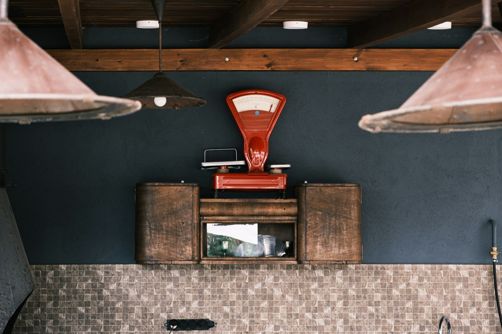
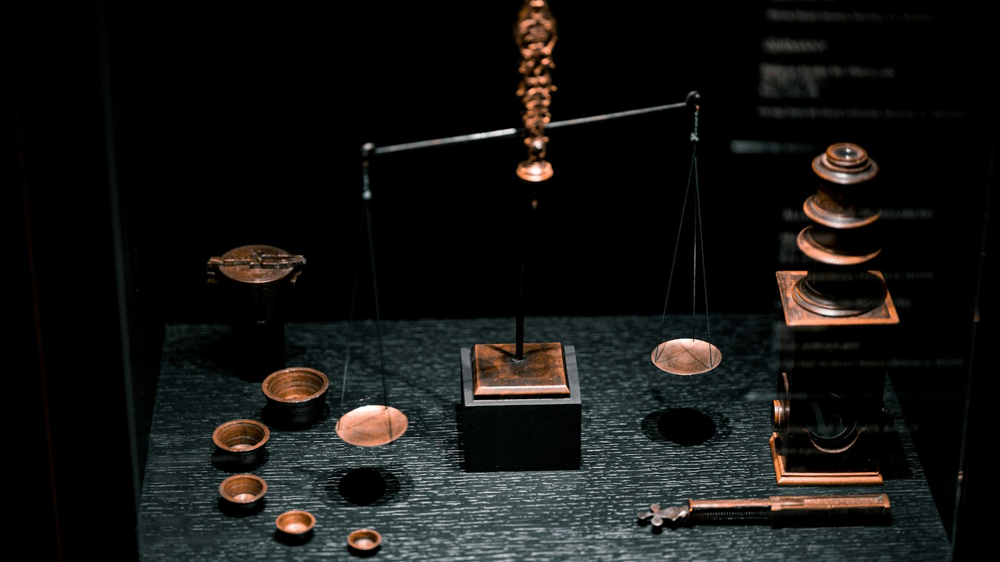

오시는 길
마루내시 분동로 18 (가상 주소). 저울은 건물 뒤 반입구로 들여옵니다.
접수 시간
- 접수 시간
- 평일 09:00~17:00
- 점심시간
- 12:00~13:00 (접수 쉼)
- 반출 시간
- 평일 10:00~17:30
- 휴무
- 토 · 일 · 공휴일
약도
교통
- 버스
- 분동로 입구 정류장 하차 · 걸어서 4분
- 지하철
- 마루내역 2번 출구 · 걸어서 11분
- 자동차
- 분동로 18 뒤편 반입구
반입 요령
- 준비물
- 저울 본체 · 접시 · 전원 어댑터 · 지난 합격 표지
- 포장
- 접시는 떼어 따로 싸기 · 매달림 저울은 고리 고정
- 분동
- 맨손으로 잡지 않기 · 집게나 장갑 사용 · 상자째 가져오기
- 주차
- 건물 뒤 반입 주차 4면 · 30분 무료
- 30 kg 넘는 저울
- 반입구 1번 · 손수레 빌려 드림

